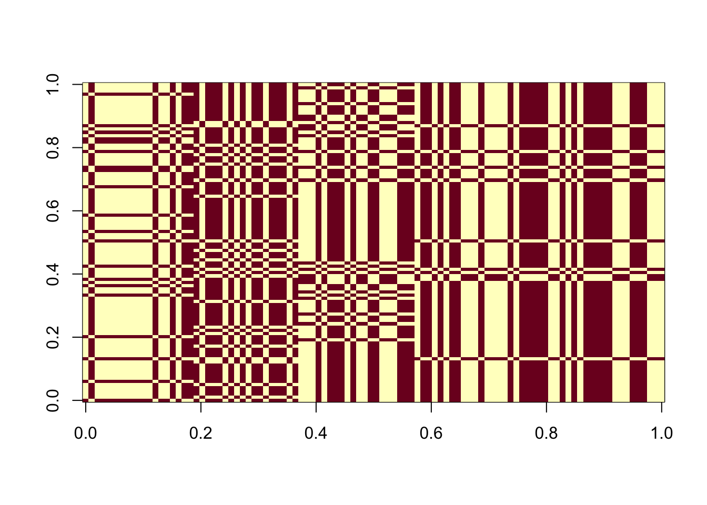
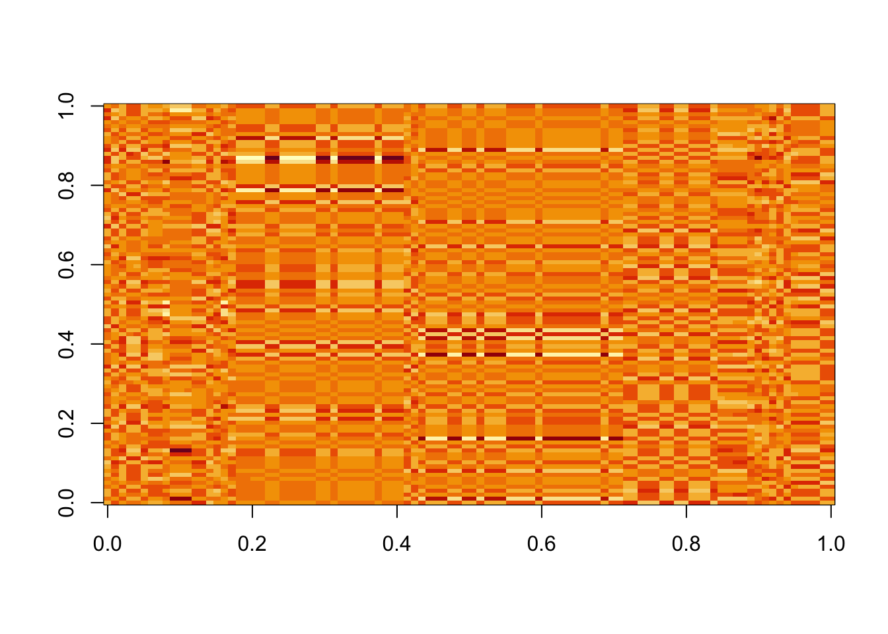

Last updated: 2026-03-12
Checks: 7 0
Knit directory: misc/
This reproducible R Markdown analysis was created with workflowr (version 1.7.1). The Checks tab describes the reproducibility checks that were applied when the results were created. The Past versions tab lists the development history.
Great! Since the R Markdown file has been committed to the Git repository, you know the exact version of the code that produced these results.
Great job! The global environment was empty. Objects defined in the global environment can affect the analysis in your R Markdown file in unknown ways. For reproduciblity it’s best to always run the code in an empty environment.
The command set.seed(20251108) was run prior to running
the code in the R Markdown file. Setting a seed ensures that any results
that rely on randomness, e.g. subsampling or permutations, are
reproducible.
Great job! Recording the operating system, R version, and package versions is critical for reproducibility.
Nice! There were no cached chunks for this analysis, so you can be confident that you successfully produced the results during this run.
Great job! Using relative paths to the files within your workflowr project makes it easier to run your code on other machines.
Great! You are using Git for version control. Tracking code development and connecting the code version to the results is critical for reproducibility.
The results in this page were generated with repository version 1eb2758. See the Past versions tab to see a history of the changes made to the R Markdown and HTML files.
Note that you need to be careful to ensure that all relevant files for
the analysis have been committed to Git prior to generating the results
(you can use wflow_publish or
wflow_git_commit). workflowr only checks the R Markdown
file, but you know if there are other scripts or data files that it
depends on. Below is the status of the Git repository when the results
were generated:
Ignored files:
Ignored: .DS_Store
Ignored: .Rhistory
Ignored: .Rproj.user/
Untracked files:
Untracked: analysis/ica_vs_flash_r1_rad copy.Rmd
Untracked: analysis/ica_vs_flash_r1_rad.Rmd
Untracked: analysis/ica_vs_flash_r1_update_2.Rmd
Untracked: analysis/preemble.tex
Untracked: analysis/references.bib
Untracked: code/ica_functions.R
Untracked: code/references.bib
Unstaged changes:
Modified: analysis/ica_vs_flash_r1_update_1.Rmd
Modified: code/ebnm_rademacher.R
Note that any generated files, e.g. HTML, png, CSS, etc., are not included in this status report because it is ok for generated content to have uncommitted changes.
These are the previous versions of the repository in which changes were
made to the R Markdown (analysis/eb_ica.Rmd) and HTML
(docs/eb_ica.html) files. If you’ve configured a remote Git
repository (see ?wflow_git_remote), click on the hyperlinks
in the table below to view the files as they were in that past version.
| File | Version | Author | Date | Message |
|---|---|---|---|---|
| Rmd | 1eb2758 | junmingguan | 2026-03-12 | wflow_publish("analysis/eb_ica.Rmd") |
We examine an empirical Bayes version of ICA, where the prior \(p_\pi(s_i)=\text{Rad}(s_i;\ \pi)\) is estimated from the data. The steps to find one source are as follows:
M-step: \(\mathbf{w} = Y \mathbf{s}^+ / \| Y \mathbf{s}^+ \|\)
E-step:
\[ \begin{align} (\hat{q}(\mathbf{s}), \hat{\pi}) &=\arg \max_{q, \pi} \mathbb{E}_q\left[\log p(\mathbf{s}, Y \mid \mathbf{w})\right] \\ \\ &= \arg \max_{q, \pi} \mathbb{E}_q\left[ \log p(Y \mid \mathbf{s}, \mathbf{w}) + \sum \log p_\pi(s_i )\right] \\ &= \arg \max_{q, \pi} \left\{-\frac{1}{2\sigma^2} (-2 \text{tr}(\mathbb{E}_q[\mathbf{s}]^\top Y^\top \mathbf{w}) + \mathbb{E}_q\|\mathbf{s}\|^2) -\sum\text{KL}\Big(q(s_i)\ \|\ p_\pi(s_i)\Big)\right\} \end{align} \]
For a rank-K fit, we proceed as follows:
M-step:
\(W_+ = YS^+\)
Orthogonalization: \(W = U_+ V_+^\top\), where \(W^+=U_+ DV_+^\top\), which is equivalent to \(W= (W_+W_+^\top)^{-1/2} W_+\) proposed in [@Karhunenetal].
E-step: for \(k=1,\dots, K\),
Obtain \(\hat{q}_k, \hat{\pi}_k\) by \(\text{EBNM}(Y^\top\mathbf{w}_k, \sigma)\)
\(\mathbf{s}_k^+=\mathbb{E}_\hat{q}[\mathbf{s}_k]\).
library(flashier)
library(Matrix)
library(fastICA)
library(fastTopics)
library(ebnm)
source('code/ebcd_functions.R')
source('code/ica_functions.R')
source('code/ebnm_rademacher.R')simulate_unbalanaced_rad_groups <- function(
K, n=100, p=1000, noise=1, percent_one=0.2) {
set.seed(1)
L = matrix(-1,nrow=n,ncol=K)
for(i in 1:K){L[sample(1:n,floor(percent_one*n)),i]=1}
FF = matrix(rnorm(p*K), nrow = p, ncol=K)
X = L %*% t(FF) + rnorm(n*p, 0, noise)
return(list(X=X, L=L, FF=FF))
}sim_data <- simulate_unbalanaced_rad_groups(
K=3, n=100, p=1000, percent_one = 0.2, noise = 1
)
X <- sim_data$X
L <- sim_data$L
FF <- sim_data$FF
X1 <- preprocess(X)cor_max_ebica <- c() # maximum correlation between the estmate and a true source
cor_max_fastica <- c() # maximum correlation between the estmate and a true source
est_S_ebica <- matrix(0, nrow = nrow(X), ncol = 100) # all 100 solutions
est_S_fastica <- matrix(0, nrow = nrow(X), ncol = 100) # all 100 solutions
for (i in 1:100) {
set.seed(i)
s <- matrix(rnorm(nrow(X)), ncol = 1)
w <- X1 %*% s
ebica_res <- ebica(t(X), K=1,
S_init = s)
fastica_w <- fastica_r1update(w, X1)
fastica_s <- t(X1) %*% fastica_w
cor_max_ebica <- c(cor_max_ebica, max(abs(cor(L, ebica_res$S_plus))))
est_S_ebica[,i] <- ebica_res$S_plus
cor_max_fastica <- c(cor_max_fastica, max(abs(cor(L, fastica_s))))
est_S_fastica[,i] <- fastica_s
}Converged in 3 iterations. Final ELBO: -303290.3
Converged in 3 iterations. Final ELBO: -303042.3
Converged in 2 iterations. Final ELBO: -303042.3
Converged in 2 iterations. Final ELBO: -303042.3
Converged in 2 iterations. Final ELBO: -303259.2
Converged in 4 iterations. Final ELBO: -303042.3
Converged in 3 iterations. Final ELBO: -303042.3
Converged in 2 iterations. Final ELBO: -303042.3
Converged in 2 iterations. Final ELBO: -303279.9
Converged in 4 iterations. Final ELBO: -303279.9
Converged in 3 iterations. Final ELBO: -303290.3
Converged in 2 iterations. Final ELBO: -303290.3
Converged in 3 iterations. Final ELBO: -303279.9
Converged in 4 iterations. Final ELBO: -303042.3
Converged in 2 iterations. Final ELBO: -303259.2
Converged in 3 iterations. Final ELBO: -303279.9
Converged in 4 iterations. Final ELBO: -303042.3
Converged in 4 iterations. Final ELBO: -303042.3
Converged in 5 iterations. Final ELBO: -303042.3
Converged in 4 iterations. Final ELBO: -303042.3
Converged in 2 iterations. Final ELBO: -303259.2
Converged in 2 iterations. Final ELBO: -303259.2
Converged in 4 iterations. Final ELBO: -303042.3
Converged in 3 iterations. Final ELBO: -303259.2
Converged in 3 iterations. Final ELBO: -303042.3
Converged in 2 iterations. Final ELBO: -303290.3
Converged in 5 iterations. Final ELBO: -303042.3
Converged in 2 iterations. Final ELBO: -303279.9
Converged in 3 iterations. Final ELBO: -303042.3
Converged in 2 iterations. Final ELBO: -303290.3
Converged in 3 iterations. Final ELBO: -303279.9
Converged in 2 iterations. Final ELBO: -303042.3
Converged in 3 iterations. Final ELBO: -303279.9
Converged in 4 iterations. Final ELBO: -303279.9
Converged in 2 iterations. Final ELBO: -303042.3
Converged in 4 iterations. Final ELBO: -303042.3
Converged in 2 iterations. Final ELBO: -303279.9
Converged in 4 iterations. Final ELBO: -303042.3
Converged in 2 iterations. Final ELBO: -303042.3
Converged in 4 iterations. Final ELBO: -303259.2
Converged in 2 iterations. Final ELBO: -303042.3
Converged in 4 iterations. Final ELBO: -303279.9
Converged in 4 iterations. Final ELBO: -303042.3
Converged in 3 iterations. Final ELBO: -303259.2
Converged in 4 iterations. Final ELBO: -303290.3
Converged in 4 iterations. Final ELBO: -303042.3
Converged in 2 iterations. Final ELBO: -303259.2
Converged in 2 iterations. Final ELBO: -303290.3
Converged in 2 iterations. Final ELBO: -303259.2
Converged in 2 iterations. Final ELBO: -303279.9
Converged in 2 iterations. Final ELBO: -303279.9
Converged in 4 iterations. Final ELBO: -303259.2
Converged in 2 iterations. Final ELBO: -303290.3
Converged in 3 iterations. Final ELBO: -303042.3
Converged in 4 iterations. Final ELBO: -303042.3
Converged in 2 iterations. Final ELBO: -303259.2
Converged in 2 iterations. Final ELBO: -303259.2
Converged in 2 iterations. Final ELBO: -303290.3
Converged in 3 iterations. Final ELBO: -303279.9
Converged in 3 iterations. Final ELBO: -303259.2
Converged in 2 iterations. Final ELBO: -303279.9
Converged in 3 iterations. Final ELBO: -303042.3
Converged in 4 iterations. Final ELBO: -303290.3
Converged in 2 iterations. Final ELBO: -303279.9
Converged in 2 iterations. Final ELBO: -303290.3
Converged in 3 iterations. Final ELBO: -303290.3
Converged in 3 iterations. Final ELBO: -303042.3
Converged in 4 iterations. Final ELBO: -303042.3
Converged in 2 iterations. Final ELBO: -303279.9
Converged in 4 iterations. Final ELBO: -303042.3
Converged in 2 iterations. Final ELBO: -303259.2
Converged in 3 iterations. Final ELBO: -303042.3
Converged in 2 iterations. Final ELBO: -303259.2
Converged in 2 iterations. Final ELBO: -303290.3
Converged in 4 iterations. Final ELBO: -303042.3
Converged in 3 iterations. Final ELBO: -303290.3
Converged in 4 iterations. Final ELBO: -303042.3
Converged in 2 iterations. Final ELBO: -303042.3
Converged in 2 iterations. Final ELBO: -303290.3
Converged in 5 iterations. Final ELBO: -303042.3
Converged in 2 iterations. Final ELBO: -303290.3
Converged in 2 iterations. Final ELBO: -303259.2
Converged in 2 iterations. Final ELBO: -303042.3
Converged in 2 iterations. Final ELBO: -303259.2
Converged in 2 iterations. Final ELBO: -303042.3
Converged in 6 iterations. Final ELBO: -303290.3
Converged in 2 iterations. Final ELBO: -303259.2
Converged in 2 iterations. Final ELBO: -303279.9
Converged in 3 iterations. Final ELBO: -303042.3
Converged in 5 iterations. Final ELBO: -303042.3
Converged in 3 iterations. Final ELBO: -303290.3
Converged in 2 iterations. Final ELBO: -303259.2
Converged in 3 iterations. Final ELBO: -303042.3
Converged in 5 iterations. Final ELBO: -303042.3
Converged in 2 iterations. Final ELBO: -303279.9
Converged in 3 iterations. Final ELBO: -303042.3
Converged in 4 iterations. Final ELBO: -303042.3
Converged in 5 iterations. Final ELBO: -303279.9
Converged in 2 iterations. Final ELBO: -303259.2
Converged in 3 iterations. Final ELBO: -303042.3 table(abs(cor_max_ebica) > 0.99)
FALSE TRUE
43 57 table(abs(cor_max_fastica) > 0.99)
FALSE
100 image(t(est_S_ebica[, order((cor_max_ebica), decreasing = T)]))
image(t(est_S_fastica[, order((cor_max_fastica), decreasing = T)]))
K <- 3
ebica_res <- ebica(t(X), K=K,
S_init = NULL)Converged in 3 iterations. Final ELBO: -297232.8 cor(L, ebica_res$S_plus) [,1] [,2] [,3]
[1,] -5.724587e-17 -6.250000e-02 1.000000e+00
[2,] -1.000000e+00 -1.734723e-17 5.724587e-17
[3,] 1.734723e-17 1.000000e+00 -6.250000e-02fastica_res <- fastICA(X, n.comp = K, alg.typ = "parallel")
cor(L, fastica_res$S) [,1] [,2] [,3]
[1,] 0.5610073 -0.2071364 0.8004757
[2,] 0.5797838 -0.5914011 -0.5590788
[3,] 0.5534336 0.7897468 -0.2615436K <- 4
ebica_res <- ebica(t(X), K=K,
S_init = NULL)Converged in 4 iterations. Final ELBO: -296086.9 cor(L, ebica_res$S_plus) [,1] [,2] [,3] [,4]
[1,] -5.724587e-17 0.5837923 6.250000e-02 -1.000000e+00
[2,] -1.000000e+00 -0.2810852 1.734723e-17 -5.724587e-17
[3,] 1.734723e-17 0.5837923 -1.000000e+00 6.250000e-02fastica_res <- fastICA(X, n.comp = K, alg.typ = "parallel")
cor(L, fastica_res$S) [,1] [,2] [,3] [,4]
[1,] 0.71950860 -0.08927415 0.12029707 -0.67695948
[2,] -0.04814472 -0.94855271 -0.30994530 0.01850681
[3,] -0.72395529 0.03350308 -0.03122539 -0.68715783sim_data <- simulate_unbalanaced_rad_groups(
K=9, n=100, p=1000, percent_one = 0.2, noise = 1
)
X <- sim_data$X
L <- sim_data$L
FF <- sim_data$FF
X1 <- preprocess(X)K <- 9
ebica_res <- ebica(t(X), K=K,
S_init = NULL)Converged in 16 iterations. Final ELBO: -572191.6 cor(L, ebica_res$S_plus) [,1] [,2] [,3] [,4] [,5]
[1,] -6.25000e-02 -6.250000e-02 0.03340765 -6.250000e-02 1.000000e+00
[2,] -6.25000e-02 -1.214306e-16 -0.57906604 -1.734723e-17 5.724587e-17
[3,] -5.89806e-17 -1.875000e-01 -0.18931005 1.000000e+00 -6.250000e-02
[4,] 6.25000e-02 1.250000e-01 0.31180478 6.250000e-02 3.469447e-17
[5,] -1.00000e+00 -6.250000e-02 -0.13363060 5.898060e-17 6.250000e-02
[6,] 6.25000e-02 6.250000e-02 0.03340765 5.030698e-17 -5.377643e-17
[7,] -6.25000e-02 -6.250000e-02 -0.52338659 1.875000e-01 -6.250000e-02
[8,] -6.25000e-02 -1.000000e+00 -0.18931005 1.875000e-01 6.250000e-02
[9,] 6.25000e-02 1.250000e-01 0.14476653 -2.500000e-01 -6.250000e-02
[,6] [,7] [,8] [,9]
[1,] -1.048264e-01 0.0625 -5.377643e-17 0.02238551
[2,] 3.170035e-07 0.0625 6.250000e-02 0.63506661
[3,] 1.572469e-01 0.2500 5.030698e-17 0.07808380
[4,] 6.813812e-01 -0.0625 6.250000e-02 0.52313892
[5,] -9.548081e-06 0.0625 -6.250000e-02 0.02186438
[6,] -1.040346e-05 -0.0625 1.000000e+00 0.07756263
[7,] 6.813912e-01 0.0625 -6.250000e-02 -0.31180410
[8,] 2.932995e-06 0.1250 -6.250000e-02 0.02238552
[9,] -5.242434e-02 -1.0000 6.250000e-02 -0.03384371fastica_res <- fastICA(X, n.comp = K, alg.typ = "parallel")
cor(L, fastica_res$S) [,1] [,2] [,3] [,4] [,5] [,6]
[1,] 0.01266385 -0.12360502 0.21550994 0.61493754 -0.09778762 -0.12018950
[2,] 0.21512020 -0.04789910 -0.28777603 0.27452589 -0.45819531 0.46578776
[3,] 0.11493562 0.48578339 0.02800915 0.09590862 0.45858479 0.44898289
[4,] 0.08202316 0.11822699 0.09854783 -0.03705956 0.42874365 -0.46658797
[5,] 0.13025949 -0.04518180 -0.22047010 -0.61628075 -0.11602071 0.23789488
[6,] 0.62387803 -0.01471223 0.12169720 0.13214526 0.37461126 0.22498648
[7,] 0.49920292 0.06348860 -0.60894900 0.02729623 0.09223617 -0.38166148
[8,] 0.49425877 0.05896283 0.59224129 -0.16451246 -0.37864899 0.01661035
[9,] -0.05642200 0.71903387 -0.04562637 -0.03314662 -0.31929668 -0.33972816
[,7] [,8] [,9]
[1,] 0.04943659 -0.539379426 -0.49077803
[2,] 0.16725648 0.490871802 -0.31028679
[3,] -0.54632858 0.043839780 -0.16447667
[4,] 0.18324213 0.498382769 -0.53195760
[5,] 0.09422399 -0.425729616 -0.53922928
[6,] 0.57210827 -0.061019137 0.23400377
[7,] -0.45840499 -0.093417343 0.02259182
[8,] -0.47650475 -0.006533553 -0.04461892
[9,] 0.47527765 -0.075946073 0.16097573
sessionInfo()R version 4.3.1 (2023-06-16)
Platform: aarch64-apple-darwin20 (64-bit)
Running under: macOS 26.2
Matrix products: default
BLAS: /Library/Frameworks/R.framework/Versions/4.3-arm64/Resources/lib/libRblas.0.dylib
LAPACK: /Library/Frameworks/R.framework/Versions/4.3-arm64/Resources/lib/libRlapack.dylib; LAPACK version 3.11.0
locale:
[1] en_US.UTF-8/en_US.UTF-8/en_US.UTF-8/C/en_US.UTF-8/en_US.UTF-8
time zone: America/Los_Angeles
tzcode source: internal
attached base packages:
[1] stats graphics grDevices utils datasets methods base
other attached packages:
[1] fastTopics_0.6-192 fastICA_1.2-7 Matrix_1.6-4 flashier_1.0.54
[5] ebnm_1.1-34 workflowr_1.7.1
loaded via a namespace (and not attached):
[1] tidyselect_1.2.1 viridisLite_0.4.2 dplyr_1.1.4
[4] fastmap_1.2.0 lazyeval_0.2.2 promises_1.3.0
[7] digest_0.6.37 lifecycle_1.0.4 processx_3.8.2
[10] invgamma_1.1 magrittr_2.0.3 compiler_4.3.1
[13] rlang_1.1.4 sass_0.4.9 progress_1.2.3
[16] tools_4.3.1 utf8_1.2.4 yaml_2.3.10
[19] data.table_1.16.2 knitr_1.48 prettyunits_1.2.0
[22] htmlwidgets_1.6.4 scatterplot3d_0.3-44 RColorBrewer_1.1-3
[25] Rtsne_0.17 purrr_1.0.2 grid_4.3.1
[28] fansi_1.0.6 git2r_0.35.0 colorspace_2.1-1
[31] ggplot2_3.5.1 scales_1.3.0 gtools_3.9.5
[34] cli_3.6.3 rmarkdown_2.28 crayon_1.5.3
[37] generics_0.1.3 RcppParallel_5.1.9 rstudioapi_0.15.0
[40] httr_1.4.7 pbapply_1.7-2 cachem_1.1.0
[43] stringr_1.5.1 splines_4.3.1 parallel_4.3.1
[46] softImpute_1.4-1 matrixStats_1.3.0 vctrs_0.6.5
[49] jsonlite_1.8.9 callr_3.7.3 hms_1.1.3
[52] mixsqp_0.3-54 ggrepel_0.9.6 irlba_2.3.5.1
[55] horseshoe_0.2.0 trust_0.1-8 plotly_4.10.4
[58] jquerylib_0.1.4 tidyr_1.3.1 glue_1.8.0
[61] ps_1.7.5 uwot_0.1.16 cowplot_1.1.3
[64] stringi_1.8.4 Polychrome_1.5.1 gtable_0.3.6
[67] later_1.3.2 quadprog_1.5-8 munsell_0.5.1
[70] tibble_3.2.1 pillar_1.9.0 htmltools_0.5.8.1
[73] truncnorm_1.0-9 R6_2.5.1 rprojroot_2.0.3
[76] evaluate_1.0.1 lattice_0.21-8 highr_0.11
[79] RhpcBLASctl_0.23-42 SQUAREM_2021.1 ashr_2.2-63
[82] httpuv_1.6.14 bslib_0.8.0 Rcpp_1.0.13
[85] deconvolveR_1.2-1 whisker_0.4.1 xfun_0.48
[88] fs_1.6.4 getPass_0.2-4 pkgconfig_2.0.3